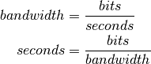

The sumparser parses sum-lines and stores the bandwidth sum. Unlike the IperfParser it uses the summed lines that iperf calculates. This means that if intervals and parallel threads were used and within one (or more) of those intervals one or more of the threads didn’t report its value then the interval-sums will have fewer values than there were intervals (iperf will just skip summing an interval that didn’t have all the threads reporting back). The IperfParser, in contrast, will under-report the interval (unless the thread was actually dead) but it will at least give you a value. On the other hand, if all the sum-lines were there, then this would presumably be the more accurate method since we’re taking what iperf itself reports.
| HumanExpression() | The Human Expression matches the human-readable iperf output |
| HumanExpression.thread_column | an expression for the thread-number column |
| CsvExpressionSum([threads]) | Changes the thread column to look for -1 if needed | ||
| CsvExpressionSum.thread_column |
|
| SumParser(*args, **kwargs) | The SumParser emits bandwidth sum lines | ||
| SumParser.__call__(line) | The Main interface to add raw iperf lines to the parser | ||
| SumParser.pipe(*args, **kwargs) | |||
| SumParser.transfer_units | a hack to handle the fact that only the bandwidth units are being specified | ||
| SumParser.traverse(intervals) | traverses the intervals, infilling missing intervals | ||
| SumParser.bandwidths | Traverses self.interval’s keys in sorted order and generates their bandwidths. | ||
| SumParser.transfers | generator of transfer values | ||
| SumParser.regex |
|
||
| SumParser.valid(match) |
|
||
| SumParser.bandwidth(match) |
|
||
| SumParser.transfer(match) |
|
||
| SumParser.search(line) |
|
||
| SumParser.reset() | Resets the attributes set during parsing | ||
| SumParser.filename(basename) | Changes the extension of the basename to .csv |
The __call__ is the main way to use it. There are two ways to get the interval sums from the SumParser (and the IperfParser). One is to poll the returned value from the __call__ to see if a value was returned. I’ll start by working with client-side input that has two threads and one-second reporting intervals.
if in_documentation:
data_folder = 'tests/steps/samples/'
data_path = os.path.join(data_folder, 'client_data.iperf')
parser = SumParser(threads=2)
for line in open(data_path):
bandwidth = parser(line)
if bandwidth is not None:
print(bandwidth)
96.5
94.4
94.4
93.3
93.3
94.4
94.4
94.4
92.3
94.4
Warning
the returned value is a float, not a string so it has to be cast to a string to be saved (don’t do bandwidth + '\n').
The original way to use it is to add all the lines and traverse the bandwidths afterwards. For the IperfParser this might be the safer way to use it if the data is being fed to it live while iperf is running, since it’s adding up the threads.
Warning
The way iperf seems to work is that if you are using multiple threads and one or more of the threads misses a reporting interval it will report the thread information but not a summed-line. This means that the SumParser will have fewer data-points than the actual number of intervals that really exist (and the times will be shifted backwards). If you don’t inspect the raw output before using the SumParser you could end up with incorrect data. If you need to work with the intervals, use the IperfParser.
if in_documentation:
parser.reset()
for line in open(data_path):
parser(line)
for bandwidth in parser.bandwidths:
print(bandwidth)
96.5
94.4
94.4
93.3
93.3
94.4
94.4
94.4
92.3
94.4
When the SumParser matches a line that has an interval larger than what it is set to accept then it will set its last_line_bandwidth attribute to it, so once the whole iperf output has been consumed that attribute will have the final bandwidth value that iperf calculated for the entire session, assuming that the output is complete and this was the last line. If the line is missing it should be None.
From what I can tell it looks like this is the most accurate value not the added interval sums.
Here I’ll compare what happens when you add the sum-lines up and take the mean versus using the last_line_bandwidth (iperf’s calculated rate). parser.bandwidths is a generator of interval bandwidths and parser.intervals is a dictionary that maps interval:bandwidth. Since the bandwidths attribute is a generator I can’t take it’s length so I’m using the length of the intervals instead.
if in_documentation:
parser.reset()
parser.threads = 4
for line in open(data_path):
parser(line)
calculated_average = sum(parser.bandwidths)/len(parser.intervals)
Now the outcome.
| Source | Bandwidth (Mbits/Second) |
|---|---|
| Sum Lines | 94.18 |
| Iperf | 94.1 |
So... the re-calculated mean is higher... I don’t really know what this means. My guess would be that this is a problem of loss of precision in converting everything into Mbits/second. Let’s try an iperf file that used bits as the units.
First I’ll set up the IperfParser and SumParser to convert to bits (which means no conversion in this case, since the source file was in bits). I’ll also import the UnitConverter, a dict that has a sub-dict that returns the conversion factor when converting from one unit to another (it takes the form unitconverter[<from units>][<to units>] = <conversion factor>). The file that’s going to be checked is tests/steps/samples/client_p4_bits.iperf which is the output of the client-side output (the transmitter) when run with four parallel threads and the output format in bits.
if in_documentation:
#set up the unitconverter
from unitconverter import UnitConverter
from unitconverter import UnitNames
from unitconverter import BinaryUnitNames as b_names
from unitconverter import BinaryUnitconverter
converter = UnitConverter()
b_converter = BinaryUnitconverter()
data_path = os.path.join(data_folder, 'client_p4_bits.iperf')
# rename the sum-parser used earlier to make it clearer
sum_parser = parser
#setup the parsers to use bits
voodoo = IperfParser(units=UnitNames.bits, threads=4)
sum_parser.reset()
sum_parser.units = UnitNames.bits
sum_parser.threads = 4
# load them up with the raw lines
for line in open(data_path):
sum_parser(line)
voodoo(line)
Now we add the interval bandwidths together, convert the total from bits to Mbits and then take the mean.
if in_documentation:
# convert the sums to Mbits and take the average
total_bandwidth = sum(sum_parser.bandwidths) * converter[UnitNames.bits][UnitNames.mbits]
calculated_average = total_bandwidth/len(sum_parser.intervals)
# same for the re-added threads
v_total = sum(voodoo.bandwidths) * converter['bits']['Mbits']
v_average = v_total/len(voodoo.intervals)
# now iperf's
iperf_mean = sum_parser.last_line_bandwidth * converter['bits']['Mbits']
And here’s what we get.
| Source | Mean Bandwidth (Mbits/Second) |
|---|---|
| Iperf | 93.592467 |
| Sum-Lines | 93.9524096 |
| Threads | 93.9524096 |
So in this case, since there were no threads with missing intervals the SumParser and the IperfParser came up with the same values but both were higher than iperf’s calculated final value. It appears that there’s more going on than just a round-off error.
I think that there are multiple things going on. One is that I’m assuming that each interval is exactly 1 second, but that’s not necessarily the case. Also, the last transfer isn’t included in the interval reports, just in the final report. I’ll try a file with bits again, but this time I specified two threads and a buffer of 512 KiloBytes.
if in_documentation:
voodoo = IperfParser(units=UnitNames.bits, threads=2)
sum_parser = SumParser(threads=2, units=UnitNames.bits)
filename = os.path.join(data_folder, 'tartarus_p2_bits_halfM.iperf')
with open(filename) as reader:
for line in reader:
voodoo(line)
sum_parser(line)
print(line)
[SUM] 0.0-10.2 sec 119537664 Bytes 94015278 bits/sec
Looking at the last line output you can see that it actually ran for a reported 10.2 seconds (or at least one of the threads did). We’ll try the re-calculation on the transfers.
if in_documentation:
mbytes = b_converter[b_names.bytes][b_names.mebibytes]
recalculated_transfer = sum(voodoo.transfers)
recalculated_transfer_mbytes = recalculated_transfer * mbytes
iperfs_transfer = sum_parser.last_line_transfer
iperfs_transfer_mbytes = iperfs_transfer * mbytes
| Source | Transfer (MBytes) |
|---|---|
| Re-Calculated | 113.0 |
| Iperf’s Transfer | 114.0 |
So the re-added transfer is still missing data. The most likely reason is that the last data-transfer isn’t added to the last interval but added to the final tally instead. Each thread adds one buffer’s worth of data to the final tally so in this case it should be 1 Megabyte short like we see. We can double-check.
if in_documentation:
missing = b_converter[b_names.mebibytes][b_names.bytes]
recalculated_transfer += missing
recalculated_transfer_mbytes = recalculated_transfer * mbytes
| Source | Transfer(Mbytes) |
|---|---|
| Re-Calculated | 114.0 |
| Iperf’s Transfer | 114.0 |
Now we can re-try the bandwidth, remembering that it took 10.2 seconds to finish.
if in_documentation:
m_bits = converter[UnitNames.bits][UnitNames.mbits]
recalculated_bandwidth = recalculated_transfer * b_converter[b_names.bytes][b_names.bits]
recalculated_bandwidth = recalculated_bandwidth
recalculated_bandwidth_mbits = (recalculated_bandwidth/10.2) * m_bits
iperfs_bandwidth = sum_parser.last_line_bandwidth * m_bits
| Source | Bandwidth (Mbits) |
|---|---|
| Re-Calculated | 93.76 |
| Iperf | 94.02 |
So it still doesn’t capture the full bandwidth... We can get the actual time with a little algebra.

if in_documentation:
transfer = sum_parser.last_line_transfer * b_converter[b_names.bytes][b_names.bits]
seconds = transfer/float(sum_parser.last_line_bandwidth)
print(seconds)
10.1717649763
Once more with feeling.
if in_documentation:
recalculated_bandwidth_mbits = (recalculated_bandwidth/seconds) * m_bits
| Source | Bandwidth (Mbits) |
|---|---|
| Re-Calculated | 94.02 |
| Iperf | 94.02 |
So there you have it.